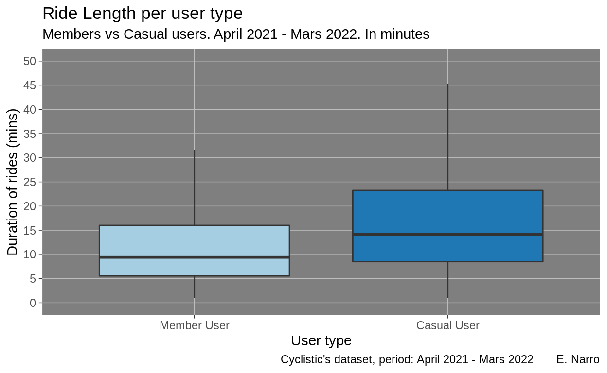
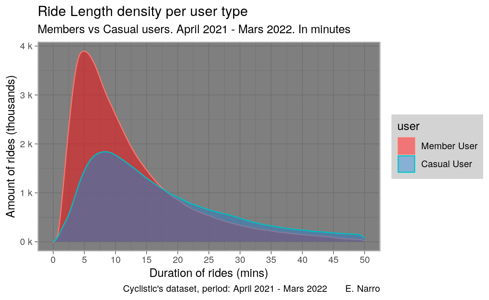

This case study is the final project (capstone) of the Google Analytics Coursera course.
This are the libraries required for the report:
Show code
if(!require("tidyverse")) install.packages("tidyverse")
if(!require("lubridate")) install.packages("lubridate")
if(!require("geosphere")) install.packages("geosphere")
if(!require("summarytools")) install.packages("summarytools")
if(!require("ggplot2")) install.packages("ggplot2")
if(!require("osmdata")) install.packages("osmdata")
if(!require("sf")) install.packages("sf")
if(!require("ggmap")) install.packages("ggmap")
if(!require("rgdal")) install.packages("rgdal")
if(!require("ggspatial")) install.packages("ggspatial")
library("tidyverse")
library("lubridate")
library("geosphere")
#https://dabblingwithdata.wordpress.com/2017/12/20/my-favourite-r-package-for-frequency-tables/
#https://github.com/dcomtois/summarytools
#install.packages("summarytools")
library("summarytools")
library("ggplot2")
library("osmdata")
library("sf")
library("ggmap")
library("rgdal")
library("ggspatial")
business task
This report shows insights about the following question:
Are there time-based, geographic or product-specific differences in the the rides done by member users and the ones done by casual users?
Data source : Cyclistic’s dataset
The main data source used for this task is internal Cyclistic data about rides of the past year.
Original data location
Data can be downloaded from the following URL : https://divvy-tripdata.s3.amazonaws.com/index.html
The following table contains every dataset (click to download), along with their publication date and size.
| Name | Date Modified | Size | Type |
|---|---|---|---|
| 202104-divvy-tripdata.zip | May 7th 2021, 04:52:05 pm | 11.78 MB | ZIP file |
| 202105-divvy-tripdata.zip | Jun 11th 2021, 07:10:18 pm | 18.89 MB | ZIP file |
| 202106-divvy-tripdata.zip | Jul 16th 2021, 01:22:05 am | 26.52 MB | ZIP file |
| 202107-divvy-tripdata.zip | Aug 14th 2021, 08:06:49 am | 29.68 MB | ZIP file |
| 202108-divvy-tripdata.zip | Sep 8th 2021, 08:10:46 pm | 27.88 MB | ZIP file |
| 202109-divvy-tripdata.zip | Oct 4th 2021, 07:21:39 pm | 27.48 MB | ZIP file |
| 202110-divvy-tripdata.zip | Nov 4th 2021, 08:58:36 pm | 23.01 MB | ZIP file |
| 202111-divvy-tripdata.zip | Dec 8th 2021, 09:19:04 pm | 13.82 MB | ZIP file |
| 202112-divvy-tripdata.zip | Jan 6th 2022, 05:18:45 pm | 9.33 MB | ZIP file |
| 202201-divvy-tripdata.zip | Feb 2nd 2022, 05:55:22 pm | 3.84 MB | ZIP file |
| 202202-divvy-tripdata.zip | Mar 2nd 2022, 09:22:47 pm | 4.30 MB | ZIP file |
| 202203-divvy-tripdata.zip | Apr 6th 2022, 07:07:41 pm | 10.39 MB | ZIP file |
Project data
All the data used for this project is stored in the Data folder of the 2022-04-18_members-casual-differences, following all company’s guidelines.
Data License
Original dataset is published under the following license : https://ride.divvybikes.com/data-license-agreement
Metadata
The datasets for the period** March 2021 – March 2022** are provided per month, as CSV files, and can be downloaded from the web page in compressed (zip) format. Original datasets are provided without metadata.
However, using intuition and after checking the metadata provided in the file “Divvy_Stations_Trips_2013”we were able to figure out the following :
| Variables | Description |
|---|---|
| ride_id | ID attached to each trip taken |
| rideable_type | Type of bike taken |
| started_at | Day and time trip started, in CST |
| ended_at | Day and time trip ended, in CST |
| start_station_name | Name of station where trip originated |
| start_station_id | ID of station where trip originated |
| end_station_name | Name of station where trip terminated |
| end_station_id | ID of station where trip terminated |
| start_lat | Latitude of of station where trip originated |
| start_lng | Longitude of station where trip originated |
| end_lat | Latitude of station where trip terminated |
| end_long | Longitude of station where trip terminated |
| member_casual | Type of user. Member has a yearly subscription and casual does not |
Data credibility observations
- Data reliability and possible bias:
- Data reflects trips, it does not identify users, so we can not know how many individuals use the service several times. For example, “how many ‘casual’ users use the service X times a month”, is a question we can not answer.
- Data origin:
- Data comes from Cyclistic’s internal source, 1st party information
- Data is comprehensive:
- Some information is missing or has problems (some coordinates are are wrong and there is a few rides with abnormal lengths -even negative lengths-)
- Data is current:
- It includes past 12 month at time of analysis
- Covid-19 may have altered riders’ behavior, so this has to be taken into account when interpreting results *Data is vetted :
- This data comes from our data engineers team and that it has been vetted
Data processing
There are 12 files to clean, totaling 1.1 Gb. The description of the files is in the metadata section.
Google Analytics capstone exercise states that part of the data preparation and data cleaning process has to be done solely with spreadsheets. LibreOffice Calc and Google Spreadsheets were used but the files are just too heavy. The course has now a few years of existence and this may be due to the fact that some files group the information by quarters (instead of by month) and are lighter. Anyhow, we want the information of the last 12 month, so we decided to go with the bigger files, which impose using other tools and we chose processing with R. Spreadsheets were still used to have a general overview of the dataset and of the outcomes of the processing.
We proceeded in 3 steps :
- Create a Stations dataset, with name, id number, latitude and longitude for each station
- Create 12 separated cleaned files, for each month
- Merging all the datasets into a single one
Having a separated stations dataset helps us reduce the weight of the main file while keeping a unique ID number for the stations but removing the stations names (using SQL JOINS or other method). It also creates a light file with all the stations and coordinates for eventual cartography.
Stations dataset
For the stations dataset, we loop through all the stations (end_station and start_station) of all the files, to make sure that we have all the stations in the global dataset.
Show code
file_names <- list.files(path="files_to_clean",pattern="*.csv")
df_stations = data.frame(id_original="", name="", lat=0.0, lng=0.0)
After the file is created and we have specified which files to loop through, we create a data frame with all the stations. The following steps avoid using too much memory (it takes a couple minutes):
Show code
#for rename function
for(file in file_names){
df_trips <- read.csv(paste("files_to_clean/", file, sep=""))
df_stations1 <-df_trips[c("start_station_id", "start_station_name", "start_lat", "start_lng")]
df_stations2 <-df_trips[c("end_station_id", "end_station_name", "end_lat", "end_lng")]
df_stations1 <- rename(df_stations1, id_original = start_station_id, name = start_station_name, lat = start_lat, lng = start_lng)
df_stations2 <- rename(df_stations2, id_original = end_station_id, name = end_station_name, lat = end_lat, lng = end_lng)
df_stations1<- rbind(df_stations1, df_stations2)
df_stations<- rbind(df_stations, df_stations1)
#make some space
rm(df_stations1, df_stations2)
#We keep unique combinations, but this does not give one row per id since long and lat info is too precise. We do this at the end of each loop to avoid huge files
df_stations <- unique(df_stations[c("id_original", "name", "lat", "lng")])
}
This generates a moderately big data frame (about 235 Mb), but it has many repeated stations. Now we will sort it and keep only unique values for stations. Latitude and longitude values will be calculated as a mean of all the values. This is arbitrary. Latitude and Longitude values come from GPS data from the bikes, which can be parked within a small area with slightly different coordinates, in the same stations (few meters away).
Show code
#We order by id
df_stations <- df_stations[order(df_stations$id_original), ]
#Get the mean for both latitude and longitude
df_stations_lat <- aggregate(df_stations$lat, list(df_stations$id_original, df_stations$name), FUN=mean)
df_stations_lng <- aggregate(df_stations$lng, list(df_stations$id_original, df_stations$name), FUN=mean)
#Append the info to df_stations df
df_stations <- data.frame(id_original = df_stations_lat$Group.1, name = df_stations_lat$Group.2, lat = df_stations_lat$x, lng = df_stations_lng$x)
#Remove row where id is empty
#inspired from https://www.statology.org/remove-rows-in-r/
df_stations <- df_stations[-c(1),]
#We order by id
df_stations <- df_stations[order(df_stations$id), ]
#Remove duplicates
df_stations <- df_stations %>%
distinct(id_original, .keep_all = TRUE)
This creates a much smaller data frame (148 kb). We now save as ‘stations.csv’ and clean the environment.
After checking with a spreadsheet, we have stations which are obviously repair, charging or test stations. Since trip to and from those stations do not involve customers, we will delete those rows in the next section. Here is the list of those IDs:
- Bissell St & Armitage Ave - Charging
- DIVVY 001
- DIVVY CASSETTE REPAIR MOBILE STATION
- Lincoln Ave & Roscoe St - Charging
- Pawel Bialowas - Test- PBSC charging station
- Throop/Hastings Mobile Station
- Wilton Ave & Diversey Pkwy - Charging
Preparing and cleaning monthly files
Since there are 12 files, we loop through all of them and apply the function created below. Here is a brief summary of steps taken by the function :
- Create a data frame from the original csv file
- Remove trip id ; remove station names for both start and end: id is not needed for the analysis (and we could always trace back the information ir really required). Station names are kept in the stations.csv file (and we can link both datasets with station IDs). This allows to remove noise and have a smaller dataset.
- Order by date: We order dataset by date and time (of the starting point of the ride).
- Remove duplicated rows.
- Remove rows with NA values.
- Rename type of bike: Electric is renamed e, docked is renamed d and classic is renamed c. This is only to gain some space
- Rename member column: The column “member_casual” is renamed to “member”, and the values “casual” are renamed “N” (for NO) and values “member” are renamed “Y” (for YES). This is to gain space.
- Erase rows with non-customer trips: Some stations are repair or test stations (view section above), we remove them since they should not involve customers.
- Add ride length (in seconds): We add a column, ride_length, to the dataset, with the duration (in seconds) of the trip. Note that a customer may not have been riding the bike during the full time he has been renting it. Also note that not all customers ride as fast.
- Remove rides with abnormal length: Some data comes with trips that “ended before the started”, or duration of 0 seconds. Some trips have duration of very few seconds. We have removed trips of less than 1 minute. We also remove trips that lasted over a day, since they ere probably stolen bikes or some other kind of technical problem.
- Add ride distance (in meters): We add the distance between the starting and the end point of the ride. Note that this is the shortest distance between points, it does not reflect at all the real distance the customer rides.
- Make day of the week column: We create a column with the day of the week, for further analysis.
- Make month column: We create a column with the month for further analysis.
- Make hour column: We create a column with the hour of the day (of the starting point) for further analysis
- Remove end date: We remove the end date time, which is not needed for analysis and since we have already calculated trip duration
The code:
Show code
clean_trip_files <- function(file){
read_file_path <- paste("files_to_clean/", file, sep = "")
df_trips <- read.csv(read_file_path)
#Order dataset by started date time (started_at)
df_trips <- df_trips[order(df_trips$started_at), ]
#Remove some columns we do not need
df_trips <- df_trips[c("rideable_type", "started_at", "ended_at", "start_station_id", "end_station_id", "start_lat", "start_lng", "end_lat", "end_lng", "member_casual")]
#Remove duplicates
df_trips <- df_trips[!duplicated(df_trips), ]
#Remove NA values
df_trips <- na.omit(df_trips)
#Rename electric_bike to e, classic_bike to c and docked_bike to d
#inspired from https://stackoverflow.com/questions/43108310/how-to-rename-a-specific-cell-in-r
df_trips$rideable_type <- gsub("electric_bike", "e", df_trips$rideable_type)
df_trips$rideable_type <- gsub("classic_bike", "c", df_trips$rideable_type)
df_trips$rideable_type <- gsub("docked_bike", "d", df_trips$rideable_type)
#Rename member_casual column to member, then create boolean datatype Y/N
df_trips <- rename(df_trips, member = member_casual)
df_trips$member <- gsub("member", "Y", df_trips$member)
df_trips$member <- gsub("casual", "N", df_trips$member)
#Remove rows with repair stations in it
list_repair <- list("Bissell St & Armitage Ave - Charging", "DIVVY 001", "DIVVY CASSETTE REPAIR MOBILE STATION", "Lincoln Ave & Roscoe St - Charging", "Pawel Bialowas - Test- PBSC charging station", "Throop/Hastings Mobile Station", "Wilton Ave & Diversey Pkwy - Charging")
for (trip_row in 1:nrow(df_trips)){
if(df_trips[trip_row,4] %in% list_repair){
df_trips <- df_trips[-c(trip_row),]
}
else if(df_trips[trip_row,5] %in% list_repair){
df_trips <- df_trips[-c(trip_row),]
}
}
# add ride_length column to the dataset
df_trips <- transform(df_trips, ride_length = ymd_hms(ended_at) - ymd_hms(started_at))
#Remove trips under a minute (or with 0 second or even negative values) and over a day
df_trips <- subset(df_trips, ride_length > 60)
df_trips <- subset(df_trips, ride_length < 86400)
#add ride_distance to the dataset
#Inspiration from : https://www.rdocumentation.org/packages/geosphere/versions/1.5-14/topics/distHaversine
df_trips <- transform(df_trips, ride_distance = distHaversine(df_trips[7:6], df_trips[9:8]))
#Get info from the day (reference is start_time, arbitrary)
df_trips <- transform(df_trips, week_day = as.character(wday(df_trips$started_at, label = TRUE)))
df_trips <- transform(df_trips, month = as.character(month(df_trips$started_at, label = TRUE)))
df_trips <- transform(df_trips, hour = as.character(hour(df_trips$started_at)))
#remove end datetime, we keep start to further analyze, arbitrary choice
df_trips <- df_trips[c("rideable_type", "month", "started_at", "week_day", "hour", "start_station_id", "end_station_id", "start_lat", "start_lng", "end_lat", "end_lng", "member", "ride_length", "ride_distance")]
write_file_path <- paste("clean_files/", file, sep = "")
write.csv(df_trips, write_file_path, row.names = FALSE)
}
And then, we execute the function for each file to clean.
Show code
#Clean all the files using file_names function
file_names <- list.files(path="files_to_clean",pattern="*.csv")
for (file in file_names){
clean_trip_files(file)
}
Create final file
Finaly, we merge all the datasets into a single one for further analysis.
Show code
clean_file_names <- list.files(path="clean_files",pattern="*.csv", full.names = TRUE)
#Merge all clean files into 1 single dataframe (forgot to copy the source, found online...)
df_cyclistic <- do.call("rbind",lapply(clean_file_names,FUN=function(clean_file_names){ read.csv(clean_file_names)}))
#write into file
write.csv(df_cyclistic, "df_cyclistic.csv", row.names = FALSE)
The resulting file is “df_cyclistic.csv”, it is a 748 Mb file, so we will not be able to use Google Cloud Bigquery Sandbox service because it is limited to 100Mb file upload (and our $0 budget does not allow us to upgrade to load bigger files). Using spreadsheets is also impossible with a file this big.
The size of the file is somehow “medium” and we can use R (we can create smaller data frames with not all the columns at once) or use a small database service like SQLite, that will run locally.
Data Analysis and visualizations
General description of the dataset
Main descriptive statistics
First, we load the libraries we need. We also define a function to get the mode of our values.
Then, we load the main datasets.
Show code
df_trips <- read.csv("df_cyclistic.csv")
df_stations <- read.csv("stations.csv")
#Turn categorical variables into factor
df_trips$rideable_type <- factor(df_trips$rideable_type, levels = c("c","e","d"))
df_trips$rideable_type <- recode_factor(df_trips$rideable_type, "c" = "Classic" , "e" = "Electric", "d" = "Docked")
df_trips$week_day <- factor(df_trips$week_day, levels = c("Mon", "Tue", "Wed", "Thu", "Fri", "Sat", "Sun"))
df_trips$month <- factor(df_trips$month, levels = c("Apr", "May", "Jun", "Jul", "Aug", "Sep", "Oct", "Nov", "Dec", "Jan", "Feb", "Mar"))
df_trips$hour <- factor(as.character(df_trips$hour), levels = c("0", "1", "2", "3", "4", "5", "6", "7", "8", "9", "10", "11", "12", "13", "14", "15", "16", "17", "18", "19", "20", "21", "22", "23"))
df_trips$member <- factor(df_trips$member, levels = list("Y", "N"))
df_trips$member <- recode_factor(df_trips$member, "Y" = "Member User" , "N" = "Casual User")
df_trips <- rename(df_trips, user = member)
Here is the table structure:
Show code
glimpse(df_trips)
Rows: 5,626,694
Columns: 14
$ rideable_type <fct> Electric, Classic, Electric, Classic, Elect…
$ month <fct> Apr, Apr, Apr, Apr, Apr, Apr, Apr, Apr, Apr…
$ started_at <chr> "2021-04-01 00:03:18", "2021-04-01 00:03:47…
$ week_day <fct> Thu, Thu, Thu, Thu, Thu, Thu, Thu, Thu, Thu…
$ hour <fct> 0, 0, 0, 0, 0, 0, 0, 0, 0, 0, 0, 0, 0, 0, 0…
$ start_station_id <chr> "527", "13430", "", "TA1307000131", "KA1504…
$ end_station_id <chr> "15648", "TA1308000026", "", "13045", "TA13…
$ start_lat <dbl> 42.01888, 41.89076, 41.72000, 41.88688, 41.…
$ start_lng <dbl> -87.69008, -87.63170, -87.62000, -87.62603,…
$ end_lat <dbl> 41.92465, 41.85008, 41.70000, 41.89399, 41.…
$ end_lng <dbl> -87.68929, -87.63214, -87.65000, -87.62932,…
$ user <fct> Member User, Member User, Member User, Memb…
$ ride_length <int> 1661, 1179, 1292, 570, 1052, 478, 558, 672,…
$ ride_distance <dbl> 10490.4741, 4528.4376, 3342.4883, 837.8058,…Then, we get the main descriptive statistics summary for the dataset.
Show code
Data Frame Summary
df_trips
Dimensions: 5626694 x 14Duplicates: 0
| No | Variable | Stats / Values | Freqs (% of Valid) | Graph | Missing | |||||||||||||||||||||||||||||||||||||||||||||||||||||||||||||||||
|---|---|---|---|---|---|---|---|---|---|---|---|---|---|---|---|---|---|---|---|---|---|---|---|---|---|---|---|---|---|---|---|---|---|---|---|---|---|---|---|---|---|---|---|---|---|---|---|---|---|---|---|---|---|---|---|---|---|---|---|---|---|---|---|---|---|---|---|---|---|---|
| 1 | rideable_type [factor] |
|
|
 |
0 (0.0%) | |||||||||||||||||||||||||||||||||||||||||||||||||||||||||||||||||
| 2 | month [factor] |
|
|
 |
0 (0.0%) | |||||||||||||||||||||||||||||||||||||||||||||||||||||||||||||||||
| 3 | started_at [character] |
|
|
 |
0 (0.0%) | |||||||||||||||||||||||||||||||||||||||||||||||||||||||||||||||||
| 4 | week_day [factor] |
|
|
 |
0 (0.0%) | |||||||||||||||||||||||||||||||||||||||||||||||||||||||||||||||||
| 5 | hour [factor] |
|
|
 |
0 (0.0%) | |||||||||||||||||||||||||||||||||||||||||||||||||||||||||||||||||
| 6 | start_station_id [character] |
|
|
 |
0 (0.0%) | |||||||||||||||||||||||||||||||||||||||||||||||||||||||||||||||||
| 7 | end_station_id [character] |
|
|
 |
0 (0.0%) | |||||||||||||||||||||||||||||||||||||||||||||||||||||||||||||||||
| 8 | start_lat [numeric] |
|
430262 distinct values |  |
0 (0.0%) | |||||||||||||||||||||||||||||||||||||||||||||||||||||||||||||||||
| 9 | start_lng [numeric] |
|
409122 distinct values |  |
0 (0.0%) | |||||||||||||||||||||||||||||||||||||||||||||||||||||||||||||||||
| 10 | end_lat [numeric] |
|
432742 distinct values |  |
0 (0.0%) | |||||||||||||||||||||||||||||||||||||||||||||||||||||||||||||||||
| 11 | end_lng [numeric] |
|
394293 distinct values |  |
0 (0.0%) | |||||||||||||||||||||||||||||||||||||||||||||||||||||||||||||||||
| 12 | user [factor] |
|
|
 |
0 (0.0%) | |||||||||||||||||||||||||||||||||||||||||||||||||||||||||||||||||
| 13 | ride_length [integer] |
|
23552 distinct values |  |
0 (0.0%) | |||||||||||||||||||||||||||||||||||||||||||||||||||||||||||||||||
| 14 | ride_distance [numeric] |
|
1742755 distinct values |  |
0 (0.0%) |
Generated by summarytools 1.0.0 (R version 4.2.0)
2022-05-08
We also get the modes for some of the values:
Show code
cat(paste(" mode of week days\t:", getmode(df_trips$week_day), "\n",
"mode of hour of day\t:", getmode(df_trips$hour), "\n",
"mode of month\t\t:", getmode(df_trips$month), "\n",
"mode of user type\t:", getmode(df_trips$user), "\n",
"mode of bike type\t:", getmode(df_trips$rideable_type), "\n",
"mode of duration\t:", getmode(df_trips$ride_length), "\n",
"mode of distance\t:", getmode(df_trips$ride_distance), "\n"))
mode of week days : Sat
mode of hour of day : 17
mode of month : Jul
mode of user type : Member User
mode of bike type : Classic
mode of duration : 352
mode of distance : 0 Important Dataset elements
This dataset has over 5.6 Million observations for the last 12 months (April 2021 - March 2022). Main elements from this dataset are now discussed under the perspective of an actual service. As a reminder, we are trying identify the main differences between members and casual users to increase the sales of memberships.
Note : since this is a Google Anlytic’s course project, some information that should be easy to obtain in the context of actually working for the company has been guessed using as much common sense as possible and of course looking at information from the real company that releases the data (pricing, how the service actually works…). Their website can be found here
Members make-up 55.5% of the rides and 45.5% are done by casual users.The dataset does not identify users, so we do not know how many members and casual riders use the service. In fact, we can imagine (but not prove) that there are more casual riders since members probably ride many times a year.
Classic bikes make-up 56.9% of the rides. Docked bikes are electric bikes rented by casual users that probably do not have the phone app installed and have to rent the electric bike from a docking station and return it to another docking station. Electric bikes are more expensive than classic bikes. Electric bikes do not have to be locked to a docking station, so they allow more flexibility (as long as the app is used to rent the service).
Weekends have more rides than week days, but the difference is not very big. Weekday use varies between 12.8% on Mondays and 14.3% on Fridays. In fact, Tuesdays, Wednesdays and Thursdays have almost the same share of rides, while Mondays are visibly less popular days (-0.6% compared to Tuesdays) and Fridays are a point above Thursdays, probably since they are at the beginning of the weekend. Saturday(17.1%) and Sunday (15.2%) are clearly more popular times, 32.3% of rides happen on weekends. Despite the fact that some people work on weekends, a big part of the bike use on weekends is probably for leisure purpose (or to ride bike as a sport activity). It would be interesting to know what kind of leisure riders seek.
When we look a the most popular times to ride, we see that almost 3/4 of the rides happen in second half of the day. This is important because probably a lot of the use made during the weekdays are not for commuting to work (or school or any other weekday regular activity). Some users may use the service to commute only to come back home after work, but then they would have to use public transportation in the morning. Also, since this is an aggregation of round-year data, some may use the service to commute only some days (like when it does not rain, for example… or whenever they feel like it).
When we look at monthly data, we see that warmer months (Summer, late Spring and early Autumn) are way more popular than the colder months. A special mention has to be made towards January and February, both accounting (together) for only 3.8% of the rides. This is both not very surprising and very interesting: Chicago is a pretty cold city in the winter, so probably not very well adapted for riding bikes during winter days. This difficulty makes it also very hard for a person to only rely on the bike system to commute to work and become THE number 1 option to commute. Also, having 2 months out of 2 where it is difficult to ride could make a yearly subscription less attractive, for all users.
If we take a closer look at the distribution of rides per day and per month, we see that during cold months, not only are there less rides in general, but also the proportion of rides is less important during the weekends.
Cross-Tabulation, Row Proportions
month * week_day
Data Frame: df_trips| week_day | ||||||||||||||||||||||||||||||||
|---|---|---|---|---|---|---|---|---|---|---|---|---|---|---|---|---|---|---|---|---|---|---|---|---|---|---|---|---|---|---|---|---|
| month | Mon | Tue | Wed | Thu | Fri | Sat | Sun | Total | ||||||||||||||||||||||||
| Apr | 43060 | ( | 13.0% | ) | 51407 | ( | 15.5% | ) | 36707 | ( | 11.1% | ) | 39879 | ( | 12.0% | ) | 57819 | ( | 17.4% | ) | 53574 | ( | 16.1% | ) | 49539 | ( | 14.9% | ) | 331985 | ( | 100.0% | ) |
| May | 74673 | ( | 14.3% | ) | 51208 | ( | 9.8% | ) | 61589 | ( | 11.8% | ) | 57565 | ( | 11.0% | ) | 65098 | ( | 12.5% | ) | 109950 | ( | 21.0% | ) | 102351 | ( | 19.6% | ) | 522434 | ( | 100.0% | ) |
| Jun | 77604 | ( | 10.8% | ) | 107760 | ( | 15.0% | ) | 111595 | ( | 15.6% | ) | 89248 | ( | 12.5% | ) | 98856 | ( | 13.8% | ) | 119945 | ( | 16.7% | ) | 111545 | ( | 15.6% | ) | 716553 | ( | 100.0% | ) |
| Jul | 93165 | ( | 11.5% | ) | 96237 | ( | 11.9% | ) | 98539 | ( | 12.2% | ) | 119250 | ( | 14.7% | ) | 133884 | ( | 16.6% | ) | 160023 | ( | 19.8% | ) | 107498 | ( | 13.3% | ) | 808596 | ( | 100.0% | ) |
| Aug | 108260 | ( | 13.7% | ) | 109306 | ( | 13.8% | ) | 90864 | ( | 11.5% | ) | 100157 | ( | 12.6% | ) | 109888 | ( | 13.9% | ) | 132949 | ( | 16.8% | ) | 140491 | ( | 17.7% | ) | 791915 | ( | 100.0% | ) |
| Sep | 91260 | ( | 12.3% | ) | 82576 | ( | 11.1% | ) | 113303 | ( | 15.2% | ) | 120365 | ( | 16.2% | ) | 101291 | ( | 13.6% | ) | 122064 | ( | 16.4% | ) | 113438 | ( | 15.2% | ) | 744297 | ( | 100.0% | ) |
| Oct | 62686 | ( | 10.1% | ) | 83205 | ( | 13.4% | ) | 83174 | ( | 13.4% | ) | 68323 | ( | 11.0% | ) | 97727 | ( | 15.7% | ) | 126491 | ( | 20.4% | ) | 98939 | ( | 15.9% | ) | 620545 | ( | 100.0% | ) |
| Nov | 58821 | ( | 16.6% | ) | 66125 | ( | 18.7% | ) | 52304 | ( | 14.8% | ) | 41920 | ( | 11.8% | ) | 42342 | ( | 12.0% | ) | 49042 | ( | 13.9% | ) | 43203 | ( | 12.2% | ) | 353757 | ( | 100.0% | ) |
| Dec | 29751 | ( | 12.2% | ) | 27905 | ( | 11.5% | ) | 44037 | ( | 18.1% | ) | 47010 | ( | 19.3% | ) | 41707 | ( | 17.1% | ) | 29637 | ( | 12.2% | ) | 23347 | ( | 9.6% | ) | 243394 | ( | 100.0% | ) |
| Jan | 15495 | ( | 15.2% | ) | 15852 | ( | 15.6% | ) | 14875 | ( | 14.6% | ) | 16259 | ( | 16.0% | ) | 13556 | ( | 13.3% | ) | 14446 | ( | 14.2% | ) | 11310 | ( | 11.1% | ) | 101793 | ( | 100.0% | ) |
| Feb | 22370 | ( | 19.8% | ) | 18705 | ( | 16.6% | ) | 16674 | ( | 14.8% | ) | 13208 | ( | 11.7% | ) | 14287 | ( | 12.7% | ) | 12164 | ( | 10.8% | ) | 15518 | ( | 13.7% | ) | 112926 | ( | 100.0% | ) |
| Mar | 42985 | ( | 15.4% | ) | 43758 | ( | 15.7% | ) | 49610 | ( | 17.8% | ) | 43343 | ( | 15.6% | ) | 27082 | ( | 9.7% | ) | 33874 | ( | 12.2% | ) | 37847 | ( | 13.6% | ) | 278499 | ( | 100.0% | ) |
| Total | 720130 | ( | 12.8% | ) | 754044 | ( | 13.4% | ) | 773271 | ( | 13.7% | ) | 756527 | ( | 13.4% | ) | 803537 | ( | 14.3% | ) | 964159 | ( | 17.1% | ) | 855026 | ( | 15.2% | ) | 5626694 | ( | 100.0% | ) |
Generated by summarytools 1.0.0 (R version 4.2.0)
2022-05-08
Ride length varies a lot. Members have unlimited rides included in their plan as long as they do not exceed 45 mins. They then pay $0.16/min. Casual users pay $1 to access the service and then $0.16/min, from minute 1. The average ride is 19 minutes long while the median ride is about 12 minutes. Both values are way under 45 minutes.
Starting and end points are usually docking stations, but about 13% of the time it is not-docked (electric) bikes. The most popular docking station is by far “Streeter Dr & Grand Ave”,with 1.5% of rides coming from it or going to it, and is a well known place for leisure in Chicago. All other stations have a less than 1% occurrence.
The average ride distance is 2.2 km and the median ride distance is 1.6 km, but let’s keep in mind that is the distance between start and end, not the distance really ride (and many rides have a distance of 0 because they ended where they started…).
ocking stations are mostly located in Chicago but also in the Metropolitan area, from Lincolnwood in the North to Riverdale in the South, stations are spread in a about 40 km range. The map below shows all the stations from the dataset (in blue) and all the stations found via the Open Street Map (OSM) API (this has been done to check if the data from OSM seems reliable since we are going to use it for further analysis). We can see that there is a high density of stations in Downtown Chicago and to the North, but that density is lower in the South. Density is also lower in the West compared to the East, where new docking stations are being deployed (we can see about of dozen docking stations around the town of Norridge have not been added to OSM already).
Here is the map:
Show code
#Data from our dataset, chicago stations
sf_stations <- st_as_sf(df_stations,
coords = c("lng", "lat"),
crs = 4326)
#OSM stations data, to compare
q_bikes <- getbb("Chicago") %>%
opq() %>%
add_osm_feature("amenity", "bicycle_rental")
osm_bikes <- osmdata_sf(q_bikes)
#https://stackoverflow.com/questions/61286108/error-in-cpl-transformx-crs-aoi-pipeline-reverse-ogrcreatecoordinatetrans
st_crs(osm_bikes$osm_points) <- 4326
sf_bikes <- osm_bikes$osm_points
#Chicago map layer
chicago_map <- get_stamenmap(getbb("Chicago"),
maptype = "terrain",
crop=FALSE,
zoom = 10)
Show code
ggmap(ggmap = chicago_map)+
geom_sf(data = sf_bikes,
inherit.aes = FALSE,
aes(colour = "OSM"),
#fill = "blue",
alpha = 1,
size = 1,
shape = 21)+
geom_point(data = df_stations,
aes(x = lng,
y= lat,
colour = "Cyclistic"),
#fill = "Cyclistic"),
alpha = 1,
size = .5,
shape = 21)+
#https://r-spatial.org/r/2018/10/25/ggplot2-sf.html
annotation_scale(location = "bl", width_hint = 0.5)+
annotation_north_arrow(location = "bl", which_north = "true",
pad_x = unit(0.15, "in"), pad_y = unit(0.25, "in"),
style = north_arrow_fancy_orienteering)+
theme_minimal()+
scale_colour_manual(name="Data source",
values=c(OSM="red", Cyclistic="blue"))+
#https://stackoverflow.com/questions/24496984/how-to-add-legend-to-ggplot-manually-r
theme(
# Change legend background color
legend.background = element_rect(fill = "darkgray"),
legend.key = element_rect(fill = "lightgrey", color = NA),
# Change legend key size and key width
legend.key.size = unit(1.5, "cm"),
legend.key.width = unit(0.5,"cm"),
panel.border = element_rect(color = "darkgrey",
fill = NA,
size = 1)
)+
labs(title = "Location of Cyclistic docking stations",
subtitle = "Data from Cyclistic dataset vs Open Street Map data",
caption = "Cyclistic's dataset (April 2021-Mars 2022) + OSM data. \t author: E. Narro")

Member users and casual users main differences
Time-based differences between members and casual users
Use of bikes per week day
Here is a frequency table and a graphic to see the difference in the use per week day:
Cross-Tabulation, Row Proportions
week_day * user
Data Frame: df_trips| user | ||||||||||||
|---|---|---|---|---|---|---|---|---|---|---|---|---|
| week_day | Member User | Casual User | Total | |||||||||
| Mon | 431793 | ( | 60.0% | ) | 288337 | ( | 40.0% | ) | 720130 | ( | 100.0% | ) |
| Tue | 481989 | ( | 63.9% | ) | 272055 | ( | 36.1% | ) | 754044 | ( | 100.0% | ) |
| Wed | 491379 | ( | 63.5% | ) | 281892 | ( | 36.5% | ) | 773271 | ( | 100.0% | ) |
| Thu | 467442 | ( | 61.8% | ) | 289085 | ( | 38.2% | ) | 756527 | ( | 100.0% | ) |
| Fri | 445076 | ( | 55.4% | ) | 358461 | ( | 44.6% | ) | 803537 | ( | 100.0% | ) |
| Sat | 423006 | ( | 43.9% | ) | 541153 | ( | 56.1% | ) | 964159 | ( | 100.0% | ) |
| Sun | 380137 | ( | 44.5% | ) | 474889 | ( | 55.5% | ) | 855026 | ( | 100.0% | ) |
| Total | 3120822 | ( | 55.5% | ) | 2505872 | ( | 44.5% | ) | 5626694 | ( | 100.0% | ) |
Generated by summarytools 1.0.0 (R version 4.2.0)
2022-05-08
Show code
#https://raw.githubusercontent.com/rstudio/cheatsheets/main/data-visualization-2.1.pdf
ggplot(data=df_trips)+
geom_bar(mapping=aes(x= week_day,
fill = user
))+
scale_fill_brewer(palette = "Paired")+
theme_dark()+
labs(title = "Use of bikes per day of the week",
subtitle = "Members vs Casual users. April 2021 - Mars 2022 cumulative",
caption = "Cyclistic's dataset, period: April 2021 - Mars 2022 \t E. Narro",
x = "Day of the week",
y= "Number of rides in a year (x 1000)",
fill = "User type"
)+
#https://stackoverflow.com/questions/44600061/ggplot-scales-unit-format-thousands-one-decimal-place
scale_y_continuous(labels = scales::unit_format(
unit = "k",
scale = 1e-3,
accuracy = 1))+
theme(
# Change legend background color
legend.background = element_rect(fill = "lightgrey"),
legend.key = element_rect(fill = "white", color = NA),
panel.border = element_rect(color = "darkgrey",
fill = NA,
size = 1)
)

During weekdays, most of the rides are done by members, they make about 60% of them from Monday to Thursday, and 55% of them on Fridays. During the weekends, the tendency is reversed and casual users make about 55% of the rides. It is also interesting to see that members make less rides during the weekends, in absolute numbers. In comparison, rides by casual users on Saturdays are double the ones on Tuesdays. It is also interesting to see that on Fridays, rides by members are similar to other workdays but the proportion decreases mostly due to an increase of casual user rides.
This data shows that there is a consistent base of trips done by casual users during all days of the week, even on week days. This is interesting because if we want to increase memberships, there might be a good base of potential users with no time-based limitations. On the other hand, the big amount of casual user rides during the weekends could both be due to Chicago residents using the service for leisure, in which case maybe the current membership system is not adapted to their use, and to tourists coming for the weekend, in which case membership is not really a viable option.
If the goal is to sell memberships to casual riders, maybe marketing campaigns should take place on weekends.
Use of bikes per month
Here is a frequency table and a graphic to see the difference in the use per month:
Cross-Tabulation, Row Proportions
month * user
Data Frame: df_trips| user | ||||||||||||
|---|---|---|---|---|---|---|---|---|---|---|---|---|
| month | Member User | Casual User | Total | |||||||||
| Apr | 197367 | ( | 59.5% | ) | 134618 | ( | 40.5% | ) | 331985 | ( | 100.0% | ) |
| May | 269704 | ( | 51.6% | ) | 252730 | ( | 48.4% | ) | 522434 | ( | 100.0% | ) |
| Jun | 352402 | ( | 49.2% | ) | 364151 | ( | 50.8% | ) | 716553 | ( | 100.0% | ) |
| Jul | 373588 | ( | 46.2% | ) | 435008 | ( | 53.8% | ) | 808596 | ( | 100.0% | ) |
| Aug | 385180 | ( | 48.6% | ) | 406735 | ( | 51.4% | ) | 791915 | ( | 100.0% | ) |
| Sep | 385686 | ( | 51.8% | ) | 358611 | ( | 48.2% | ) | 744297 | ( | 100.0% | ) |
| Oct | 367282 | ( | 59.2% | ) | 253263 | ( | 40.8% | ) | 620545 | ( | 100.0% | ) |
| Nov | 248584 | ( | 70.3% | ) | 105173 | ( | 29.7% | ) | 353757 | ( | 100.0% | ) |
| Dec | 174812 | ( | 71.8% | ) | 68582 | ( | 28.2% | ) | 243394 | ( | 100.0% | ) |
| Jan | 83720 | ( | 82.2% | ) | 18073 | ( | 17.8% | ) | 101793 | ( | 100.0% | ) |
| Feb | 92022 | ( | 81.5% | ) | 20904 | ( | 18.5% | ) | 112926 | ( | 100.0% | ) |
| Mar | 190475 | ( | 68.4% | ) | 88024 | ( | 31.6% | ) | 278499 | ( | 100.0% | ) |
| Total | 3120822 | ( | 55.5% | ) | 2505872 | ( | 44.5% | ) | 5626694 | ( | 100.0% | ) |
Generated by summarytools 1.0.0 (R version 4.2.0)
2022-05-08
Show code
ggplot(data=df_trips)+
geom_bar(mapping=aes(x= month,
fill = user,
))+
scale_fill_brewer(palette = "Paired")+
theme_dark()+
labs(title = "Use of bikes per month",
subtitle = "Members vs Casual users. April 2021 - Mars 2022",
caption = "Cyclistic's dataset, period: April 2021 - Mars 2022 \t E. Narro",
x = "Month",
y= "number of rides (x 1000)"
)+
#https://stackoverflow.com/questions/44600061/ggplot-scales-unit-format-thousands-one-decimal-place
scale_y_continuous(labels = scales::unit_format(
unit = "k",
scale = 1e-3,
accuracy = 1))+
theme(
legend.background = element_rect(fill = "lightgrey"),
legend.key = element_rect(fill = "white", color = NA),
panel.border = element_rect(color = "darkgrey",
fill = NA,
size = 1)
)

As we can observe, the high seasonality of the service also affects the distribution of the type of user. From May to September, the amount of rides done by members and casual users is almost even, and significantly higher for casual users during July (6% more). During the colder months, most rides are done by members, from 60% of the rides on April to over 80% in January and February.
This data shows that casual rides from December to March are very low, which can make it challenging to increase yearly subscriptions if the service is not accessed 30% of the time. Looking at the data from Members can however give us some hope, since this group also makes way less rides during the winter (member rides in January are about 1/4 of the ones in July). In fact, rides by members in July, August and September double or more than double rides in December, January and February, and almost double those in March and April. It could be a good idea to get information about why users subscribe to a service they do not use (or way less often) almost half of the year (Again, since this is case study, we do not have access to individual user rides, but if we were working with all the available data, it would be necessary to see the rides per member and also how much individual casual users use the service in a year). But there is definitely less amplitude with member data, since casual user rides in January and February are 20 times less abundant than in July and August.
This data also seems to work well with the previous one about days of the week. There is probably a fair amount of leisure riders that use the service with good weather conditions. Finding ways to make winter rides more attractive could increase the pool of users potentially interested in memberships. Also, it is probably a better idea to make marketing efforts from May to September when the service is attractive, and definitely not during the winter.
Finally, there is probably a fair amount of rides during summer holidays by foreigners to Chicago, in which case the yearly subscription method is not adapted.
Use of service per hour of the day
The following table summarizes the use of the service per hour of the day (of starting point):
Cross-Tabulation, Row Proportions
hour * user
Data Frame: df_trips| user | ||||||||||||
|---|---|---|---|---|---|---|---|---|---|---|---|---|
| hour | Member User | Casual User | Total | |||||||||
| 0 | 33463 | ( | 38.7% | ) | 53115 | ( | 61.3% | ) | 86578 | ( | 100.0% | ) |
| 1 | 22137 | ( | 36.3% | ) | 38839 | ( | 63.7% | ) | 60976 | ( | 100.0% | ) |
| 2 | 12754 | ( | 33.3% | ) | 25529 | ( | 66.7% | ) | 38283 | ( | 100.0% | ) |
| 3 | 7402 | ( | 34.5% | ) | 14043 | ( | 65.5% | ) | 21445 | ( | 100.0% | ) |
| 4 | 8404 | ( | 46.1% | ) | 9822 | ( | 53.9% | ) | 18226 | ( | 100.0% | ) |
| 5 | 31312 | ( | 71.3% | ) | 12621 | ( | 28.7% | ) | 43933 | ( | 100.0% | ) |
| 6 | 83307 | ( | 76.2% | ) | 25973 | ( | 23.8% | ) | 109280 | ( | 100.0% | ) |
| 7 | 156034 | ( | 76.6% | ) | 47541 | ( | 23.4% | ) | 203575 | ( | 100.0% | ) |
| 8 | 182109 | ( | 73.9% | ) | 64419 | ( | 26.1% | ) | 246528 | ( | 100.0% | ) |
| 9 | 134241 | ( | 63.9% | ) | 75905 | ( | 36.1% | ) | 210146 | ( | 100.0% | ) |
| 10 | 130408 | ( | 55.7% | ) | 103561 | ( | 44.3% | ) | 233969 | ( | 100.0% | ) |
| 11 | 156131 | ( | 53.8% | ) | 133870 | ( | 46.2% | ) | 290001 | ( | 100.0% | ) |
| 12 | 181408 | ( | 53.2% | ) | 159373 | ( | 46.8% | ) | 340781 | ( | 100.0% | ) |
| 13 | 177753 | ( | 51.1% | ) | 170410 | ( | 48.9% | ) | 348163 | ( | 100.0% | ) |
| 14 | 174898 | ( | 49.9% | ) | 175756 | ( | 50.1% | ) | 350654 | ( | 100.0% | ) |
| 15 | 203364 | ( | 52.2% | ) | 186372 | ( | 47.8% | ) | 389736 | ( | 100.0% | ) |
| 16 | 263778 | ( | 56.5% | ) | 203427 | ( | 43.5% | ) | 467205 | ( | 100.0% | ) |
| 17 | 327358 | ( | 58.3% | ) | 234494 | ( | 41.7% | ) | 561852 | ( | 100.0% | ) |
| 18 | 274871 | ( | 56.4% | ) | 212564 | ( | 43.6% | ) | 487435 | ( | 100.0% | ) |
| 19 | 196893 | ( | 54.4% | ) | 165144 | ( | 45.6% | ) | 362037 | ( | 100.0% | ) |
| 20 | 133839 | ( | 52.5% | ) | 120967 | ( | 47.5% | ) | 254806 | ( | 100.0% | ) |
| 21 | 100089 | ( | 49.3% | ) | 103072 | ( | 50.7% | ) | 203161 | ( | 100.0% | ) |
| 22 | 76447 | ( | 44.4% | ) | 95573 | ( | 55.6% | ) | 172020 | ( | 100.0% | ) |
| 23 | 52422 | ( | 41.6% | ) | 73482 | ( | 58.4% | ) | 125904 | ( | 100.0% | ) |
| Total | 3120822 | ( | 55.5% | ) | 2505872 | ( | 44.5% | ) | 5626694 | ( | 100.0% | ) |
Generated by summarytools 1.0.0 (R version 4.2.0)
2022-05-08
As we can see, members usually represent most of the rides. We can however see some interesting time frames:
- From 5 AM to 9 AM, members represent between 63% and 76% of the rides: This is usually a time frame when people commute to work AND also when people do not do leisure activities.
- From 10 AM to 3 PM, members do more rides, but it is more even.
- From 4 PM to 7 PM, members do significantly more rides than casual users, but the amount of total rides is also bigger. People probably commute from work and some others also enjoy leisure time in this range.
- From 8 PM to 9 PM, the use of the service starts to decrease and it evens between members and casual users.
- From 10 PM to 4 AM, the service is very low and it is mostly used by casual users.
We could estimate to know how many people use the service to commute. For this, we can calculate the percentage of members and casual users that use the service from 5 AM to 9 AM on week days, from the total amount of rides:
Show code
n
1 8.825378Show code
n
1 2.787498Member rides from 5 AM to 9 AM on week days represent 8.82 % of the total rides, and 2.79% for the casual users. Also, people who commute have to go both ways. Some of this rides could also be for other purposes. Some people may also commute at different times (even earlier for some users, people who work at night…) or even on weekends. It would be good to have a more detailed use of the service. We can however estimate that between 15% and 20% of the rides are done to commute, and the rest… probably leisure. It is also important to note that, always as an estimation, members make up around 3/4 of the commute rides..
Here is a plot of the distribution of rides per hour of the day:
Show code
ggplot(data=df_trips)+
geom_bar(mapping=aes(x= hour,
fill = user
))+
scale_fill_brewer(palette = "Paired")+
theme_dark()+
labs(title = "Use of bikes per hour of the day",
subtitle = "Members vs Casual users. April 2021 - Mars 2022 cumulative",
caption = "Cyclistic's dataset, period: April 2021 - Mars 2022 \t E. Narro",
x = "Hour of the day",
y= "Number of rides in a year (x 1000)",
fill = "User type"
)+
scale_y_continuous(labels = scales::unit_format(
unit = "k",
scale = 1e-3,
accuracy = 1))+
theme(
# Change legend background color
legend.background = element_rect(fill = "lightgrey"),
legend.key = element_rect(fill = "white", color = NA),
panel.border = element_rect(color = "darkgrey",
fill = NA,
size = 1))

Developing the use of the bike service in the mornings (to commute or other uses) probably needs to create a new market, since there are very little users for both groups in that range. Creating a new market could be advantageous because the bikes are already there. Ideas to create new market segment:
- Focus on elder people, recently retired (Senior plans for example, with adapted pricing)
- Partner with companies or other employers to offer memberships as perks so people commute on bikes. This could be a cheap attractive perk for the company, could also be used to communicate about low carbon emissions and should have a beneficial impact on employees’ health.
In the afternoons, there is already a high demand, so the goal should be to create new memberships focusing on existing users:
- If marketing campaigns are done, do them in the afternoons
- Offer exclusive service to members, related to their leisure activities: Make the subscription be more than just an economical gain.
Length of use of the service
We have a look at ride length by user type:
Show code
Descriptive Statistics
ride_length/60 by user
Data Frame: df_tripsN: 3120822
| Mean | Std.Dev | Min | Median | Max | N.Valid | Pct.Valid | |
|---|---|---|---|---|---|---|---|
| Member User | 13.32 | 19.71 | 1.02 | 9.53 | 1435.47 | 3120822 | 100.00 |
| Casual User | 26.75 | 46.38 | 1.02 | 15.97 | 1439.85 | 2505872 | 100.00 |
Generated by summarytools 1.0.0 (R version 4.2.0)
2022-05-08
Show code
#Ride length per User type
ggplot(data = df_trips)+
geom_boxplot(outlier.shape = NA,
mapping = aes(x = user,
y = ride_length,
fill = user
))+
labs(title = "Ride Length per user type",
subtitle = "Members vs Casual users. April 2021 - Mars 2022. In minutes",
caption = "Cyclistic's dataset, period: April 2021 - Mars 2022 \t E. Narro",
x = "User type",
y= "Duration of rides (mins)"
)+
scale_fill_brewer(palette = "Paired")+
theme_dark()+
theme()+
theme(legend.position = "none",
panel.grid.minor = element_blank(),
panel.grid.major = element_line(color='grey'))+
scale_y_continuous(
limits = c(0, 3000),
breaks = c(0, 300, 600, 900, 1200, 1500, 1800, 2100, 2400, 2700, 3000),
labels = c("0", "5", "10", "15", "20", "25", "30", "35", "40", "45", "50"),
)

Rides done by members are usually 10 minutes shorter than the ones by casual users, and the median ride is 5 minutes shorter. We can also see that members use the service in a more regular way, the amplitude of use of the service is way lower than for casual users. Half of the trips for members last between 5 and 15 minutes, and between 8 and 23 minutes for members. It is curious to see that the maximum length for casual users (without the outlier points) is close but above 45 minutes, and slightly above 30 minutes for members. Since the membership includes unlimited rides under 45 minutes, we can state:
- That the current membership offer could fit most current casual users’ needs.
- That 13.4% of casual users make longer than 45 minutes trips (see the calculation below). So for them, the current membership is not adapted.
Show code
df_trips %>%
filter(user == "Casual User") %>%
select(ride_length) %>%
count(ride_length > 2700) %>%
mutate(percent = n*100/sum(n))On the other hand, members almost never drive longer than 45 minutes, in fact, not even close. t could be important for users to make sure that they will never pay over the extra $0.16 per minute if they pay for a subscription. This could probably be seen as paying twice but this is an assumption, not a claim. it could be interesting to see if increasing the maximum length of the ride without extra charging could increase the amount of subscriptions by casual users. Maybe different kind of subscriptions with different maximum length amounts and pricing could be offered.
It would be good to know why do this users drive that long (do they have longer distances to ride, do they ride way slower, do they use the bikes to make sport…)
We can also compare the length of rides between members and casual users for a weekly or monthly period :
Show code
#Ride length per user type and day of the week
ggplot(data = df_trips)+
geom_boxplot(outlier.shape = NA,
mapping = aes(x = user,
y = ride_length,
fill = week_day
))+
labs(title = "Ride Length per user type and day of the week",
subtitle = "Members vs Casual users. April 2021 - Mars 2022. In minutes",
caption = 'Cyclistic"s dataset, period: April 2021 - Mars 2022 \t E. Narro',
x = "User type",
y= "Duration of rides (mins)"
)+
scale_fill_brewer(palette = "Set1", name="Day of the week")+
theme_dark()+
theme()+
theme(panel.grid.minor = element_blank(),
panel.grid.major = element_line(color='grey'))+
scale_y_continuous(
limits = c(0, 3800),
breaks = c(0, 300, 600, 900, 1200, 1500, 1800, 2100, 2400, 2700, 3000, 3300, 3600),
labels = c("0", "5", "10", "15", "20", "25", "30", "35", "40", "45", "50", "55", "60"),
)

Show code
#Ride length per user type and month
ggplot(data = df_trips)+
geom_boxplot(outlier.shape = NA,
mapping = aes(x = user,
y = ride_length,
fill = month
))+
labs(title = "Ride Length per user type and month",
subtitle = "Members vs Casual users. April 2021 - Mars 2022. In minutes",
caption = 'Cyclistic"s dataset, period: April 2021 - Mars 2022 \t E. Narro',
x = "User type",
y= "Duration of rides (mins)"
)+
scale_fill_brewer(palette = "Set3", name="Day of the week")+
theme_dark()+
theme()+
theme(legend.key.height= unit(0.4, 'cm'),
panel.grid.minor = element_blank(),
panel.grid.major = element_line(color='grey'))+
guides(fill=guide_legend(ncol=2))+ #make the legend have 2 cols
scale_y_continuous(
limits = c(0, 3800),
breaks = c(0, 300, 600, 900, 1200, 1500, 1800, 2100, 2400, 2700, 3000, 3300, 3600),
labels = c("0", "5", "10", "15", "20", "25", "30", "35", "40", "45", "50", "55", "60"),
)

As we can see, members have a more consistent use of the service, with shorter rides along weekdays and more long rides during the weekends. Casual users follow this trend too, but it seems less homogeneous, and the amplitude is way bigger.
The homogeneity of members rides is even more visible when length is studied by month. Winter months see shorter rides, but casual users actually make the longest rides in April and May. This is important because if we decide to market memberships at this period of the year (as stated earlier), we could be offering a product not adapted to a fair amount of users.
The following density chart also gives a good image of the use length:
Show code
ggplot(data=df_trips)+
geom_density(aes(x = ride_length, color = user, fill=user, after_stat(count)), alpha = 0.6)+
labs(title = "Ride Length density per user type",
subtitle = "Members vs Casual users. April 2021 - Mars 2022. In minutes",
caption = "Cyclistic's dataset, period: April 2021 - Mars 2022 \t E. Narro",
x = "Duration of rides (mins)",
y = "Amount of rides (thousands)"
)+
scale_fill_brewer(palette = "Set1")+
theme_dark()+
theme(
# Change legend background color
legend.background = element_rect(fill = "lightgrey"),
legend.key = element_rect(fill = "white", color = NA),
panel.border = element_rect(color = "darkgrey",
fill = NA,
size = 1)
)+
scale_x_continuous(
limits = c(0, 3000),
breaks = c(0, 300, 600, 900, 1200, 1500, 1800, 2100, 2400, 2700, 3000),
labels = c("0", "5", "10", "15", "20", "25", "30", "35", "40", "45", "50"),
)+
scale_y_continuous(labels = scales::unit_format(
unit = "k",
scale = 1e-3,
accuracy = 1))

A significant amount of member rides are under 10 minutes, even under 5 minutes. It is the biggest and main difference between both groups: members do a lot of short rides. However, correlation does not imply causation, so we can not know if users subscribe to ride quickly between points or if members ride more often, shorter periods, because they already paid and then: “why not”.
The histograms below also show this trends.
Show code
#Histogam of length of ride 0-3000
ggplot(data = df_trips)+
geom_histogram(mapping=aes(x = ride_length, fill=week_day))+
#col = "black")+
labs(title = "Distribution of ride length",
subtitle = "Members vs Casual users. April 2021 - Mars 2022. 0 - 50 mins",
caption = 'Cyclistic"s dataset, period: April 2021 - Mars 2022 \t E. Narro',
x = "Ride length (mins)",
y= "Number of observations (thousands)")+
scale_x_continuous(limits = c(0000, 3000),
breaks = c(0, 300, 600, 900, 1200, 1500, 1800, 2100, 2400, 2700, 3000),
labels = c("0", "5", "10", "15", "20", "25", "30", "35", "40", "45", "50"),)+
scale_y_continuous(labels = scales::unit_format(
unit = "k",
scale = 1e-3,
accuracy = 1))+
facet_wrap(~user)

Show code
#Histogam of length of ride 3000-6000
ggplot(data = df_trips)+
geom_histogram(mapping=aes(x = ride_length, fill=week_day))+
#col = "black")+
labs(title = "Distribution of ride length",
subtitle = "Members vs Casual users. April 2021 - Mars 2022. 50 - 100 mins",
caption = 'Cyclistic"s dataset, period: April 2021 - Mars 2022 \t E. Narro',
x = "Ride length (mins)",
y= "Number of observations (thousands)")+
scale_x_continuous(limits = c(3000, 6000),
breaks = c(3000, 3300, 3600, 3900, 4200, 4500, 4800, 5100, 5400, 5700, 6000),
labels = c("50", "55", "60", "65", "70", "75", "80", "85", "90", "95", "100"),)+
scale_y_continuous(labels = scales::unit_format(
unit = "k",
scale = 1e-3,
accuracy = 1))+
facet_wrap(~user)

Geographic differences between members and casual users
Ride distance
As previously stated, we do not really have the information about actual ride distance. but we have information about distance between starting and ending point. Let’s have a look at the ride distance distribution per user type:
Show code
Descriptive Statistics
ride_distance by user
Data Frame: df_tripsN: 3120822
| Mean | Std.Dev | Min | Median | Max | N.Valid | Pct.Valid | |
|---|---|---|---|---|---|---|---|
| Member User | 2142.41 | 1889.28 | 0.00 | 1561.37 | 32058.72 | 3120822 | 100.00 |
| Casual User | 2293.20 | 2057.15 | 0.00 | 1757.17 | 114511.71 | 2505872 | 100.00 |
Generated by summarytools 1.0.0 (R version 4.2.0)
2022-05-08
Show code
ggplot(data = df_trips)+
geom_boxplot(outlier.shape = NA,
mapping = aes(x = user,
y = ride_distance,
fill = user
))+
labs(title = "Ride distance between start and end point",
subtitle = "Members vs Casual users. April 2021 - Mars 2022. In meters",
caption = 'Cyclistic"s dataset, period: April 2021 - Mars 2022 \t E. Narro',
x = "User type",
y= "Distance between start and end (m)"
)+
scale_fill_brewer(palette = "Paired")+
theme_dark()+
theme()+
theme(legend.position = "none",
panel.grid.minor = element_blank(),
panel.grid.major = element_line(color='grey'))+
scale_y_continuous(limits = c(0, 6000)
)

Show code
ggplot(data=df_trips)+
geom_density(aes(x = ride_distance, color = user, fill=user, after_stat(count)), alpha = 0.5)+
labs(title = "Ride distance density per user type",
subtitle = "Members vs Casual users. April 2021 - Mars 2022. In meters",
caption = "Cyclistic's dataset, period: April 2021 - Mars 2022 \t E. Narro",
x = "Distance of rides (m)",
y = "Amount of rides (thousands)"
)+
scale_fill_brewer(palette = "Set1")+
theme_dark()+
theme(
# Change legend background color
legend.background = element_rect(fill = "lightgrey"),
legend.key = element_rect(fill = "white", color = NA),
panel.border = element_rect(color = "darkgrey",
fill = NA,
size = 1)
)+
scale_x_continuous(limits = c(0, 4000))+
scale_y_continuous(labels = scales::unit_format(
unit = "k",
scale = 1e-3,
accuracy = 1))

We can see several interesting things here. Casual users ride slightly longer distances both in average and as median values (between 100 and 200 m). The distributions of distance are very similar, with a bit more amplitude for casual users.
This initial observations seem to go in the same direction than the time-based differences, but in a less obvious way.
It is interesting to see that for the 0 distance trips, non-members are much more represented than members. In fact, rides of 0 distance represent 5.56% of the dataset, 3.5% only for casual riders (see calculation below).
Show code
user == "Casual User" n percent total_percent
1 FALSE 112295 35.86611 1.995755
2 TRUE 200800 64.13389 3.568703Rides of distance 0
The following map represents the 10 docking stations with more bikes used and returned to the same place, by user type. We can see that all the stations for both groups are around downtown Chicago. It is worth mentioning that one point for member users is near University.
Show code
#Fix station file !!
df_stations <- df_stations %>%
distinct(id_original, .keep_all = TRUE)
# Get the dataframes
df_stations_zero_casual <- df_trips %>%
filter(ride_distance==0)%>%
filter(user == "Casual User")%>%
filter(start_station_id != "")%>%
group_by(start_station_id)%>%
summarise(count_stations= n())%>%
arrange(desc(count_stations))
df_stations_zero_casual <- left_join(df_stations_zero_casual,
df_stations,
by = c("start_station_id" = "id_original"))
df_stations_zero_casual <- df_stations_zero_casual[1:10,]
df_stations_zero_members <- df_trips %>%
filter(ride_distance==0)%>%
filter(user == "Member User")%>%
filter(start_station_id != "")%>%
group_by(start_station_id)%>%
summarise(count_stations= n())%>%
arrange(desc(count_stations))
df_stations_zero_members <- left_join(df_stations_zero_members,
df_stations,
by = c("start_station_id" = "id_original"))
df_stations_zero_members <- df_stations_zero_members[1:10,]
#Commercial area
q_commercial_area <- getbb("Chicago") %>%
opq() %>%
add_osm_feature("landuse", "commercial")
osm_commercial_area <- osmdata_sf(q_commercial_area)
st_crs(osm_commercial_area$osm_polygons) <- 4326
sf_commercial_area <- osm_commercial_area$osm_polygon
#Parks
q_park <- getbb("Chicago") %>%
opq() %>%
add_osm_feature("leisure", "park")
osm_park <- osmdata_sf(q_park)
st_crs(osm_park$osm_polygons) <- 4326
sf_park <- osm_park$osm_polygon
station_map_1 <-get_stamenmap( bbox=c(left = -87.85,
bottom = 41.85,
right = -87.4,
top = 42.0),
zoom = 11,
crop = FALSE)
station_map_2 <-get_stamenmap( bbox=c(left = -87.65,
bottom = 41.85,
right = -87.6,
top = 41.9),
zoom = 13,
crop = FALSE)
Show code
ggmap(ggmap = station_map_1)+
geom_sf (data = sf_commercial_area,
inherit.aes = FALSE,
aes(fill = "commercial"),
color = "yellow",
alpha = 1)+
geom_sf (data = sf_park,
inherit.aes = FALSE,
aes(fill = "parks"),
color = "green",
alpha = 1)+
geom_point (data = df_stations_zero_casual,
aes(x = lng,
y= lat,
color = "Casual",
size = count_stations),
alpha = 1,
shape = 21)+
geom_point(data = df_stations_zero_members,
aes(x = lng,
y= lat,
color = "Members",
size = count_stations),
alpha = 1,
shape = 21)+
#https://r-spatial.org/r/2018/10/25/ggplot2-sf.html
annotation_scale(location = "bl", width_hint = 0.5)+
annotation_north_arrow(location = "bl", which_north = "true",
pad_x = unit(0.15, "in"), pad_y = unit(0.25, "in"),
style = north_arrow_fancy_orienteering)+
theme_minimal()+
theme(
# Change legend background color
legend.background = element_rect(fill = "darkgray"),
legend.key = element_rect(fill = "lightgrey", color = NA),
panel.border = element_rect(color = "darkgrey",
fill = NA,
size = 1),
)+
scale_color_manual(name="User type",
values=c(Casual="red", Members="blue"))+
scale_fill_manual(name="Land Use",
values=c(commercial="yellow", parks="green"))+
labs(title = "Location of most popular docking stations",
subtitle = "Stations where rides both start and end",
caption = "Cyclistic's dataset (April 2021-Mars 2022) + OSM data. \t author: E. Narro")+
geom_rect(xmin = -87.64, xmax = -87.6, ymin = 41.838, ymax = 41.93, alpha = 0, color = "red")

Show code
ggmap(ggmap = station_map_2)+
geom_sf (data = sf_commercial_area,
inherit.aes = FALSE,
aes(fill = "commercial"),
color = "yellow",
alpha = 1)+
geom_sf (data = sf_park,
inherit.aes = FALSE,
aes(fill = "parks"),
color = "green",
alpha = 1)+
geom_point (data = df_stations_zero_casual,
aes(x = lng,
y= lat,
color = "Casual",
size = count_stations),
alpha = 1,
shape = 21)+
geom_point(data = df_stations_zero_members,
aes(x = lng,
y= lat,
color = "Members",
size = count_stations),
alpha = 1,
shape = 21)+
#https://r-spatial.org/r/2018/10/25/ggplot2-sf.html
annotation_scale(location = "bl", width_hint = 0.5)+
annotation_north_arrow(location = "bl", which_north = "true",
pad_x = unit(0.15, "in"), pad_y = unit(0.25, "in"),
style = north_arrow_fancy_orienteering)+
theme_minimal()+
theme(
# Change legend background color
legend.background = element_rect(fill = "darkgray"),
legend.key = element_rect(fill = "lightgrey", color = NA),
panel.border = element_rect(color = "darkgrey",
fill = NA,
size = 1)
)+
scale_color_manual(name="User type",
values=c(Casual="red", Members="blue"))+
scale_fill_manual(name="Land Use",
values=c(commercial="yellow", parks="green"))+
labs(title = "Location of most popular docking stations",
subtitle = "Stations where rides both start and end",
caption = "Cyclistic's dataset (April 2021-Mars 2022) + OSM data. \t author: E. Narro")

We can see that most of the rides that end and start in the same place are in very leisure-centric areas of downtown Chicago.
Most popular starting stations
Now we want to take a closer look at more popular stations to start a trip a from . The following map shows the 50 most used starting stations for members as well as the 50 most used stations for casual users. It also shows all the docking stations as black dots :
Show code
df_stations_start_casual <- df_trips %>%
filter(ride_distance!=0)%>%
filter(user == "Casual User")%>%
filter(start_station_id != "")%>%
group_by(start_station_id)%>%
summarise(count_stations= n())%>%
arrange(desc(count_stations))
df_stations_start_casual <- left_join(df_stations_start_casual,
df_stations,
by = c("start_station_id" = "id_original"))
df_stations_start_members <- df_trips %>%
filter(ride_distance!=0)%>%
filter(user == "Member User")%>%
filter(start_station_id != "")%>%
group_by(start_station_id)%>%
summarise(count_stations= n())%>%
arrange(desc(count_stations))
df_stations_start_members <- left_join(df_stations_start_members,
df_stations,
by = c("start_station_id" = "id_original"))
df_stations_start_casual <- df_stations_start_casual[1:50,]
df_stations_start_members <- df_stations_start_members[1:50,]
Show code
ggmap(ggmap = chicago_map)+
geom_sf (data = sf_commercial_area,
inherit.aes = FALSE,
aes(fill = "commercial"),
color = "yellow",
alpha = 1)+
geom_sf (data = sf_park,
inherit.aes = FALSE,
aes(fill = "parks"),
color = "green",
alpha = 1)+
geom_point(data = df_stations,
aes(x = lng,
y= lat,
color = "Station"),
size=1,
fill="black",
alpha = .5,
shape = 20)+
geom_point(data = df_stations_start_members,
aes(x = lng,
y= lat,
color = "Members",
size = count_stations),
alpha = 1,
shape = 23)+
geom_point (data = df_stations_start_casual,
aes(x = lng,
y= lat,
color = "Casual",
size = count_stations),
alpha = 1,
shape = 21)+
#https://r-spatial.org/r/2018/10/25/ggplot2-sf.html
annotation_scale(location = "bl", width_hint = 0.5)+
annotation_north_arrow(location = "bl", which_north = "true",
pad_x = unit(0.15, "in"), pad_y = unit(0.25, "in"),
style = north_arrow_fancy_orienteering)+
theme_minimal()+
theme(
# Change legend background color
legend.background = element_rect(fill = "darkgray"),
legend.key = element_rect(fill = "lightgrey", color = NA),
panel.border = element_rect(color = "darkgrey",
fill = NA,
size = 1)
)+
scale_color_manual(name="User type",
values=c(Casual="red", Members="blue", Station="black"))+
scale_fill_manual(name="Land Use",
values=c(commercial="yellow", parks="green"))+
labs(title = "Location of most popular docking stations",
subtitle = "50 most popular, per user type",
caption = "Cyclistic's dataset (April 2021-Mars 2022) + OSM data. \t author: E. Narro")

Show code
ggmap(ggmap = station_map_1)+
geom_sf (data = sf_commercial_area,
inherit.aes = FALSE,
aes(fill = "commercial"),
color = "yellow",
alpha = 1)+
geom_sf (data = sf_park,
inherit.aes = FALSE,
aes(fill = "parks"),
color = "green",
alpha = 1)+
geom_point(data = df_stations,
aes(x = lng,
y= lat,
color = "Station"),
size=1,
fill="black",
alpha = .5,
shape = 20)+
geom_point(data = df_stations_start_members,
aes(x = lng,
y= lat,
color = "Members",
size = count_stations),
alpha = 1,
shape = 23)+
geom_point (data = df_stations_start_casual,
aes(x = lng,
y= lat,
color = "Casual",
size = count_stations),
alpha = 1,
shape = 21)+
#https://r-spatial.org/r/2018/10/25/ggplot2-sf.html
annotation_scale(location = "bl", width_hint = 0.5)+
annotation_north_arrow(location = "bl", which_north = "true",
pad_x = unit(0.15, "in"), pad_y = unit(0.25, "in"),
style = north_arrow_fancy_orienteering)+
theme_minimal()+
theme(
# Change legend background color
legend.background = element_rect(fill = "darkgray"),
legend.key = element_rect(fill = "lightgrey", color = NA),
panel.border = element_rect(color = "darkgrey",
fill = NA,
size = 1)
)+
scale_color_manual(name="User type",
values=c(Casual="red", Members="blue", Station="black"))+
scale_fill_manual(name="Land Use",
values=c(commercial="yellow", parks="green"))+
labs(title = "Location of most popular docking stations",
subtitle = "50 most popular, per user type - Downtown view",
caption = "Cyclistic's dataset (April 2021-Mars 2022) + OSM data. \t author: E. Narro")

As we can see, the most popular stations are almost all located in a very small part of the area covered by the network, and there seems to be very small differences between casual users and members
Most of the most popular docking stations are located in the Near North Side distric and the Loop district. This is a very visited place and has the “Magnificent Mile” which is a very popular leisure area, with lots of dining places, a lot of company buildings and government agencies, and a lot of University buildings.
A notable exception to this would be 3 specific Docking stations that are popular among members. They are located near University of Chicago and University of Illinois Chicago. So we can state that probably a lot of members are University students.
This does not tell us, however, where users come from or go to, or if there is a difference between them.
Rides by frequence
In order to have a better idea of riders, we also want to see if there is a difference between casual users and members in the routes they drive.
For this, we have grouped rides that go from one station to a different one (by removing rides that do not start or end in a docking station, as well as rides that start and end in the same place) and then group the data by single rides. This has been done for members and for casual users separately. After that, we have plotted the rides with more than 100 and with more than 1000 occurrences.
Show code
#df_path
df_path_members <-df_trips %>%
filter(ride_distance!=0)%>%
filter(start_station_id != "")%>%
filter(end_station_id != "")%>%
filter(user == "Member User") %>%
select(start_station_id, end_station_id) %>%
group_by(start_station_id, end_station_id)%>%
summarise(count_stations= n())%>%
arrange(desc(count_stations))
num_rows = nrow(df_path_members)
ID <- c(1:num_rows)
df_path_members <- cbind("ID" = ID , df_path_members)
df_path_members_bis <- df_path_members[,c(1, 3, 4)]
df_path_members <- df_path_members[,c(1, 2, 4)]
colnames(df_path_members)[2] <- "id_station"
colnames(df_path_members_bis)[2] <- "id_station"
df_path_members <- rbind(df_path_members, df_path_members_bis)
df_path_members <- df_path_members[order(df_path_members$ID, decreasing = FALSE),]
df_path_members <- left_join(df_path_members,
df_stations,
by = c("id_station" = "id_original"))
#Same for casual users:
#df_path
df_path_casual <-df_trips %>%
filter(ride_distance!=0)%>%
filter(start_station_id != "")%>%
filter(end_station_id != "")%>%
filter(user == "Casual User") %>%
select(start_station_id, end_station_id) %>%
group_by(start_station_id, end_station_id)%>%
summarise(count_stations= n())%>%
arrange(desc(count_stations))
num_rows = nrow(df_path_casual)
ID <- c(1:num_rows)
df_path_casual <- cbind("ID" = ID , df_path_casual)
df_path_casual_bis <- df_path_casual[,c(1, 3, 4)]
df_path_casual <- df_path_casual[,c(1, 2, 4)]
colnames(df_path_casual)[2] <- "id_station"
colnames(df_path_casual_bis)[2] <- "id_station"
df_path_casual <- rbind(df_path_casual, df_path_casual_bis)
df_path_casual <- df_path_casual[order(df_path_casual$ID, decreasing = FALSE),]
df_path_casual <- left_join(df_path_casual,
df_stations,
by = c("id_station" = "id_original"))
df_path_casual_100 <- df_path_casual %>%
filter(count_stations>100)
df_path_members_100 <- df_path_members %>%
filter(count_stations>100)
df_path_casual_1000 <- df_path_casual %>%
filter(count_stations>1000)
df_path_members_1000 <- df_path_members %>%
filter(count_stations>1000)
#To get geometry, there is probably a better way...
q_nothing <- getbb("Chicago") %>%
opq() %>%
add_osm_feature("landuse", "vineyard")
osm_nothing <- osmdata_sf(q_nothing)
st_crs(osm_nothing$osm_polygons) <- 4326
sf_nothing <- osm_nothing$osm_polygon
Show code
#Over 1000
ggmap(ggmap = station_map_1)+
geom_sf (data = sf_nothing,
inherit.aes = FALSE,
aes())+
geom_path(data = df_path_casual_1000,
aes(x = lng,
y = lat,
group = ID,
color = "Casual"
),
size = 1)+
geom_path(data = df_path_members_1000,
aes(x = lng,
y = lat,
group = ID,
color = "Member"
),
size = 1)+
#https://r-spatial.org/r/2018/10/25/ggplot2-sf.html
annotation_scale(location = "bl", width_hint = 0.5)+
annotation_north_arrow(location = "bl", which_north = "true",
pad_x = unit(0.15, "in"), pad_y = unit(0.25, "in"),
style = north_arrow_fancy_orienteering)+
theme_minimal()+
theme(
# Change legend background color
legend.background = element_rect(fill = "darkgray"),
legend.key = element_rect(fill = "lightgrey", color = NA),
panel.border = element_rect(color = "darkgrey",
fill = NA,
size = 1)
)+
scale_color_manual(name="User type",
values=c(Casual="red", Member="blue"))+
labs(title = "Rides with over 1000 occurrencies",
subtitle = "Members vs Casual users. April 2021 - Mars 2022 cumulative",
caption = "Cyclistic's dataset (April 2021-Mars 2022) + OSM data. \t author: E. Narro")

Show code
ggmap(ggmap = station_map_1)+
geom_sf (data = sf_nothing,
inherit.aes = FALSE,
aes())+
geom_path(data = df_path_members_100,
aes(x = lng,
y = lat,
group = ID,
color = "Member",
),
size = 0.2)+
geom_path(data = df_path_casual_100,
aes(x = lng,
y = lat,
group = ID,
color = "Casual",
),
size = 0.2)+
#https://r-spatial.org/r/2018/10/25/ggplot2-sf.html
annotation_scale(location = "bl", width_hint = 0.5)+
annotation_north_arrow(location = "bl", which_north = "true",
pad_x = unit(0.15, "in"), pad_y = unit(0.25, "in"),
style = north_arrow_fancy_orienteering)+
theme_minimal()+
theme(
# Change legend background color
legend.background = element_rect(fill = "darkgray"),
legend.key = element_rect(fill = "lightgrey", color = NA),
panel.border = element_rect(color = "darkgrey",
fill = NA,
size = 1)
)+
scale_color_manual(name="User type",
values=c(Casual="red", Member="blue"))+
labs(title = "Rides with over 100 occurrencies",
subtitle = "Members vs Casual users. April 2021 - Mars 2022 cumulative",
caption = "Cyclistic's dataset (April 2021-Mars 2022) + OSM data. \t author: E. Narro")

As we can see, the most successful rides happen in the Chicago city center.
Causal rides seem to be more touristic-oriented.
Most common members area covers all the most common casual rider’s area and is larger. On top of the busiest areas of Chicago, the area expands within Universities, some residential areas to the North and an area around Chinatown and the McCormick Place convention center.
With all these findings, if we need to make new marketing campaigns, we could suggest making them in downtown area, around the Magnificent Mile or around the parks in the Loop district area.
In order to develop the service further, the company could focus on other areas of leisure (like the zoo for example) or other colleges / Universities located more towards the West of the town, but the density of things to do around those areas seems way lower than the East Area.
So probably, if the goal is to get more casual users to subscribe, offering a better experience within the downtown area seems to be the way to go.
Product specific differences between members and casual users
There are 2 kinds of bikes users can rent, electric and classic. Docked bikes are electric bikes that need to be docked and can only be undocked by paying in a kiosk, so they are only referenced for casual users. Electric bikes can be docked or left in the street. Classic bikes need to be docked all the time.
The following table gives us the proportions for each product depending on the type of user:
Cross-Tabulation, Row Proportions
user * rideable_type
Data Frame: df_trips| rideable_type | ||||||||||||||||
|---|---|---|---|---|---|---|---|---|---|---|---|---|---|---|---|---|
| user | Classic | Electric | Docked | Total | ||||||||||||
| Member User | 1962194 | ( | 62.9% | ) | 1158628 | ( | 37.1% | ) | 0 | ( | 0.0% | ) | 3120822 | ( | 100.0% | ) |
| Casual User | 1240708 | ( | 49.5% | ) | 964780 | ( | 38.5% | ) | 300384 | ( | 12.0% | ) | 2505872 | ( | 100.0% | ) |
| Total | 3202902 | ( | 56.9% | ) | 2123408 | ( | 37.7% | ) | 300384 | ( | 5.3% | ) | 5626694 | ( | 100.0% | ) |
Generated by summarytools 1.0.0 (R version 4.2.0)
2022-05-08
Members use classic bikes most of the time (63%). They also use electric bikes in a significant amount. When members use electric bikes, they have to pay from minute 1 (but they have a better price). So this could lead to members preferring using classic bikes that have no extra cost. It could also be the other way around, people tending to subscribe more when they are classic bike users since the benefits could be more attractive.
Casual users use evenly classic or electric bikes. They tend to make longer distances so maybe that is a reason. Docked electric bikes account for 12% of the rides, for casual users, which is a significant amount of customers not even using the phone app.
It could be a good idea to make more users install the app and even test the membership. Maybe offering free special membership for a month, or any other special offer that could make people get and use the application. We can suppose that if people use the application they are a step closer to subscribing.
We can try to see if the choice of electric over classic is influenced by season or day of the week:
Show code
ggplot(data=df_trips)+
geom_bar(mapping=aes(x= week_day,
fill = rideable_type
))+
scale_fill_brewer(palette = "Set3")+
theme_dark()+
labs(title = "Type of bike per day of the week",
subtitle = "Members vs Casual users. April 2021 - Mars 2022 cumulative",
caption = "April 2021 - Mars 2022 \t E. Narro",
x = "Day of the week",
y= "Number of rides in a year (x 1000)",
fill = "User type"
)+
#https://stackoverflow.com/questions/44600061/ggplot-scales-unit-format-thousands-one-decimal-place
scale_y_continuous(labels = scales::unit_format(
unit = "k",
scale = 1e-3,
accuracy = 1))+
theme(
# Change legend background color
legend.background = element_rect(fill = "lightgrey"),
legend.key = element_rect(fill = "white", color = NA),
panel.border = element_rect(color = "darkgrey",
fill = NA,
size = 1)
)+
facet_grid(~user)

Show code
ggplot(data=df_trips)+
geom_bar(mapping=aes(x= month,
fill = rideable_type
))+
scale_fill_brewer(palette = "Set3")+
theme_dark()+
labs(title = "Type of bike per month",
subtitle = "Members vs Casual users. April 2021 - Mars 2022 cumulative",
caption = "April 2021 - Mars 2022 \t E. Narro",
x = "Month",
y= "Number of rides in a year (x 1000)",
fill = "User type"
)+
#https://stackoverflow.com/questions/44600061/ggplot-scales-unit-format-thousands-one-decimal-place
scale_y_continuous(labels = scales::unit_format(
unit = "k",
scale = 1e-3,
accuracy = 1))+
theme(
# Change legend background color
legend.background = element_rect(fill = "lightgrey"),
legend.key = element_rect(fill = "white", color = NA),
panel.border = element_rect(color = "darkgrey",
fill = NA,
size = 1)
)+
facet_grid(~user)

The distribution does not seem very impacted by seasonality, but it looks like classic bikes have more elasticity in their use, its use compared to electric bikes grows with weekends and hot months.
Conclusion
Main Findings and guesses
The main differences of casual vs member users are:
- Rides done by members are 10 times more important than those done by casual users * Members do most of the total rides on weekdays, casual users do most of the rides on weekends.
- Members ride less on weekends than on weekdays
- Casual users do not ride that much from November to March
- Casual users make longer rides, sometimes longer than 45 minutes and it is extremely rare for members to exceed 45 minutes (or even 35 minutes)
- Most rides happen in Downtown Chicago, in the East part of the city, where the skyscrapers and all the big buildings are * Casual users ride almost exclusively in the very East area of Chicago, Members expand a little more to surrounding neighborhoods.
- Members use classic bikes more often (63% of the time), casual users are about 50-50
During our analysis, we also guessed the following. It would be interesting to do further research and quantify some statements:
- A fair amount of casual riders are probably tourists, which reduces the possibility of selling memberships.
- Since casual users ride mostly on weekends (2 days out of 7), they probably see subscription less attractive
- Since casual users ride mostly on hot months (7 month out of 12), they probably see subscription less attractive
- The current pricing system influences how members and casual users ride: shorter more often rides for members, longer less frequent rides for casual users
- Location of some rides makes us think that a lot of member users are University students (there is a special membership for students too)
- A big amount of casual users do not even have the app installed
Main suggestions
- Either extend the maximum riding time with no extra charge for current memberships, OR create a new membership with longer time with no charge, with a bit higher price OR create a membership based on hours (eg: $240 for 50 hours to do within a year + same extra price than “regular” members for electric bikes – The amounts are to illustrate the point)
- Create a special low-cost subscription for the use of the service in the mornings, maybe oriented to senior citizens
- In order to convert more casual users to members, make marketing campaigns where those casual users are: around the Magnificent Mile and the parks of the Loop district, during weekends of hot months.
- Create a special offer to make casual users install and use the application
- Partner with employers so they can offer subscriptions as perks
- Focus on making a better product when used in downtown: partner with local businesses (restaurants, bars, museums…) to add value to the membership